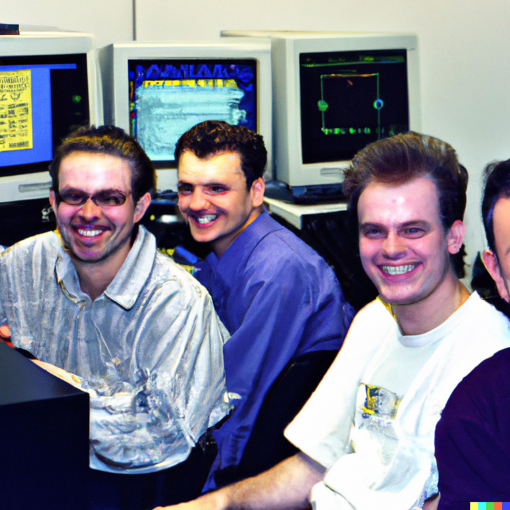
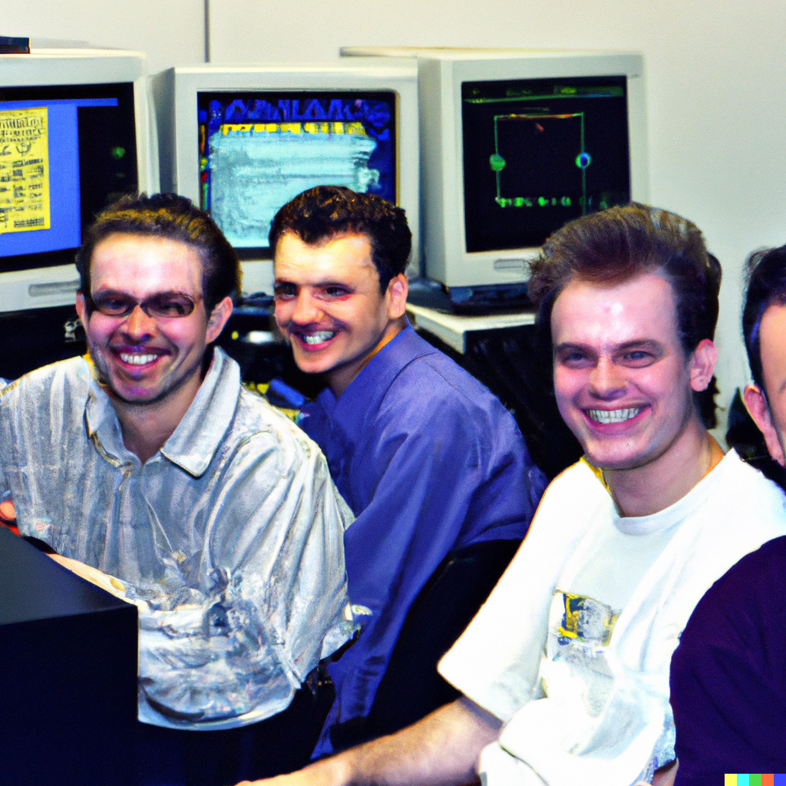

O autorach
Jesteśmy zespół pasjonatów programowania z dużym doświadczeniem w tworzeniu aplikacji webowych. GN to jeden z naszych projektów, który powstał z myślą o ułatwieniu organizacji notatek związanych z geolokalizacją.
Jesteśmy zespół pasjonatów programowania z dużym doświadczeniem w tworzeniu aplikacji webowych. GN to jeden z naszych projektów, który powstał z myślą o ułatwieniu organizacji notatek związanych z geolokalizacją.
